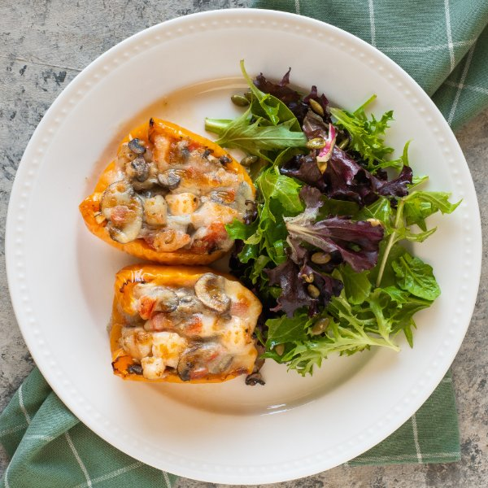

Cheesy Shrimp, Mushroom & Tomato Stuffed Peppers with Mixed Greens

Total Time
35 min
Nutrition (per serving)
598 kcalCalories
46 gProtein
26.7 gCarbs
36.2 gFat
Full nutrition table
| Calories | 598 kcal |
| Total fat | 36.2 g |
| Saturated fat | 11.2 g |
| Trans fat | 0.4 g |
| Cholesterol | 259.2 mg |
| Sodium | 1347.2 mg |
| Carbohydrates | 26.7 g |
| Fiber | 5.1 g |
| Sugars | 13.6 g |
| Protein | 46 g |
| Potassium | 1421.2 mg |
| Calcium | 459.2 mg |
| Iron | 4.1 mg |
| Vitamin A | 1599.9 IU |
| Vitamin C | 234 mg |
| Vitamin D | 15.9 IU |
Cookware
Ingredients
- 1 lbcremini mushrooms
- 4 clovesgarlic
- 1 (8 oz) blockmozzarella cheese
- 4orange bell peppers
- ½ cuppumpkin seeds
- 1 ½ lbraw peeled shrimp, fresh or frozen
- 1 (5 oz) pkgspring mix (mixed greens)
- 2tomatoes
- 1 mediumyellow onion
- black pepper
- Dijon mustard
- extra virgin olive oil
- honey
- Italian seasoning
- salt
- white wine vinegar
Steps
- Preheat oven to broil on high and position rack about 6-inches from the top.
- Wash and dry the fresh produce. (Skip the mixed greens if they came pre-washed.)4 orange bell peppers
1 lb cremini mushrooms
2 tomatoes
1 (5 oz) pkg spring mix (mixed greens) - Trim, seed, and halve bell peppers lengthwise. Transfer to a large baking sheet pan, drizzle with oil, season with salt and pepper, then arrange cut-side down.2 tsp extra virgin olive oil
⅛ tsp salt
⅛ tsp black pepper - Place baking sheet in the oven and broil, flipping once, until peppers are lightly charred and tender, 6-8 minutes. Remove from oven and set aside to cool.
- Meanwhile, thinly slice mushrooms and place in a medium bowl.
- Peel, halve, and small dice onion; peel and mince garlic. Add both to the bowl with the mushrooms.1 medium yellow onion
4 cloves garlic - If using frozen shrimp, place them in a colander and run under cold water to thaw them slightly and remove any ice crystals. (If using fresh shrimp, skip this step.) Place the shrimp on a clean towel or paper towels and pat dry, then roughly chop into bite-sized pieces.1 ½ lb raw peeled shrimp, fresh or frozen
- Preheat a large skillet over medium-high heat.
- Once the skillet is hot, add oil and swirl to coat the bottom; add shrimp, mushrooms, onion, garlic, and spices. Cook, stirring occasionally, until veggies are tender and shrimp is cooked through, about 5 minutes. Remove from heat. (Reserve bowl for the next step.)2 tbsp extra virgin olive oil
2 tsp Italian seasoning
½ tsp salt
½ tsp black pepper - Meanwhile, using a clean cutting board, medium dice tomatoes and place in the reserved bowl.
- Coarsely grate cheese; add half to the bowl with the tomato (reserving the rest for topping the peppers).1 (8 oz) block mozzarella cheese
- When the shrimp and veggies are done, add tomato and cheese to the skillet; stir to combine the filling. (Reserve bowl for the salad.)
- Divide shrimp filling between pepper halves and top with reserved cheese. Return baking sheet to the oven and broil until cheese is golden, 2-3 minutes; remove from oven.
- Meanwhile, place oil, vinegar, Dijon, honey, salt, and pepper in the reserved bowl; whisk to combine the dressing.4 tsp extra virgin olive oil
1 tbsp white wine vinegar
2 tsp Dijon mustard
1 tsp honey
½ tsp salt
¼ tsp black pepper - Add mixed greens and pumpkin seeds to the bowl with the dressing; toss to combine the salad.½ cup pumpkin seeds
- To serve, divide peppers and salad between plates. Enjoy!